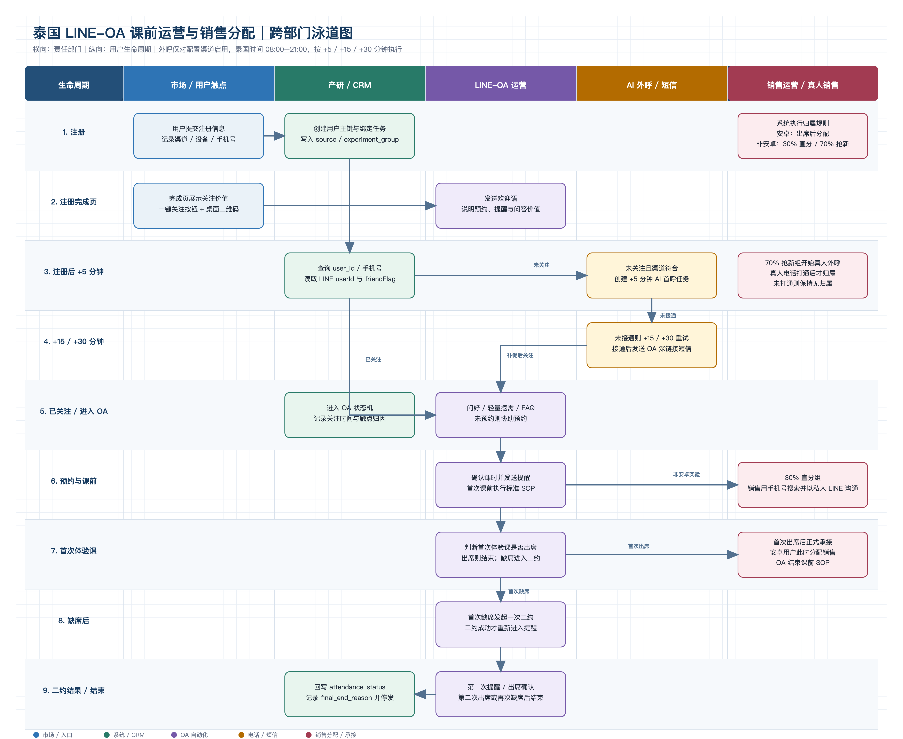
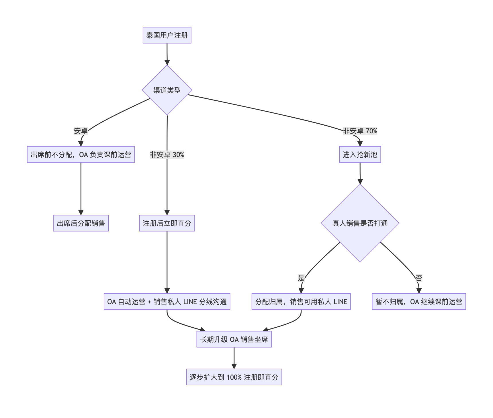

版本：v1.0
日期：2026-08-19
状态：跨部门评审稿
先把 LINE-OA 建成泰国所有渠道注册后的统一课前运营入口，再通过非安卓渠道 30% 直分 / 70% 抢新的随机实验验证销售归属机制。当前阶段允许 LINE-OA 与销售私人 LINE 分线沟通，但必须由 CRM 统一记录与控频；长期升级到销售 OA 坐席后，再扩大为 100% 注册即直分。

图 1 按用户生命周期纵向展开，横向标注市场/用户触点、产研/CRM、LINE-OA、AI 外呼/短信和销售运营/真人销售五类责任部门。每一行是一个业务时点，箭头表示跨部门交接和状态流转。
核心口径：OA 关注率 = 统计窗口内成功绑定且 friendFlag=true 的去重注册用户数 / 符合条件的去重注册用户数。

30%/70% 必须系统随机、用户分组固定，并按渠道、注册日期/时段检查基线平衡。销售分配实验主指标使用注册至付费转化率和每注册用户收入；OA 关注率是全项目主指标，但不是分配实验唯一判断依据。
| 部门/角色 | 核心任务 | 意义 |
|---|---|---|
| 项目负责人/PMO | 统一范围、里程碑、风险和跨部门决策 | 保证端到端结果，而非局部工具上线 |
| 市场 | 传递渠道参数；改造完成页；稳定实验流量 | 提升自然关注并实现渠道归因 |
| 产品/产研 | 接入 OA、绑定/查询、渠道白名单、+5/+15/+30 分钟外呼、泰国时区窗口、SOP、随机分组和退出开关 | 将业务规则固化为可靠系统能力 |
| 前端运营 | 泰语话术、FAQ、预约、提醒、二约、频控和质检 | 保证自动化真正帮助用户上课 |
| 销售运营 | 归属规则、容量、私人 LINE 协同 SOP 和冲突处理 | 避免抢单争议、重复触达和负载不均 |
| 真人销售 | 执行电话/私人 LINE；查看 OA 摘要；回写结果；课后转化 | 将 AI 信息沉淀转为高价值人工跟进 |
| 数据/BI | 漏斗、实验校验、指标口径、显著性和异常监控 | 判断真实增量与因果效果 |
| 法务/合规/安全 | 通信同意、隐私、权限、保存周期、退订和审计 | 控制个人信息和通信风险 |
| 第三方供应商 | SLA、Webhook、状态查询、日志、坐席与故障恢复 | 避免关键链路成为黑盒 |
注：AI 电话后的短信深链接、触点归因、销售私人 LINE 协同和 A/B 测试设计属于本项目建议，并非 LINE 官方强制流程。